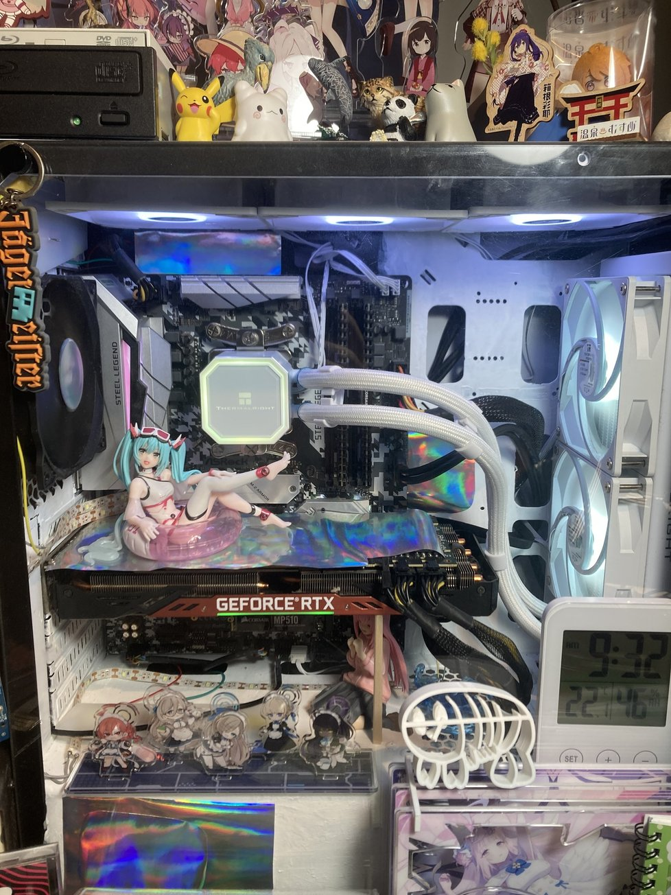
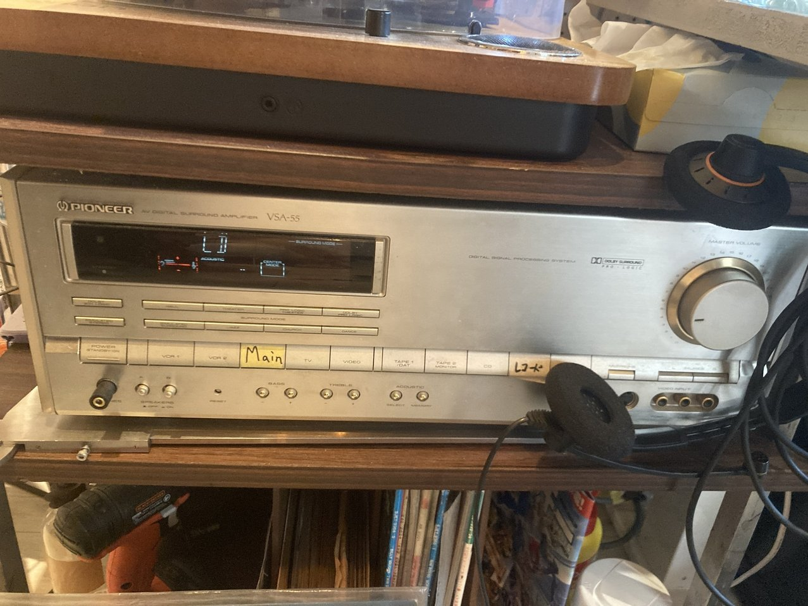
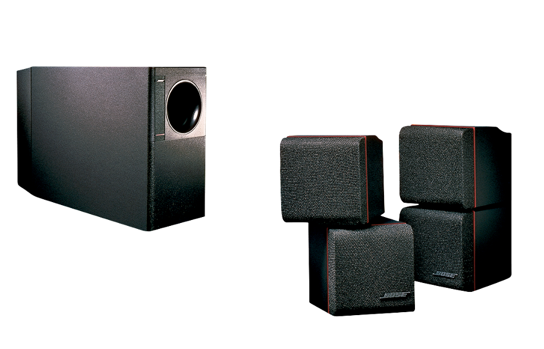
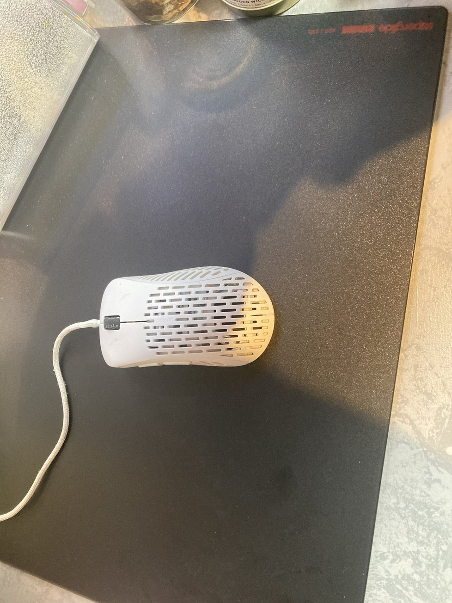
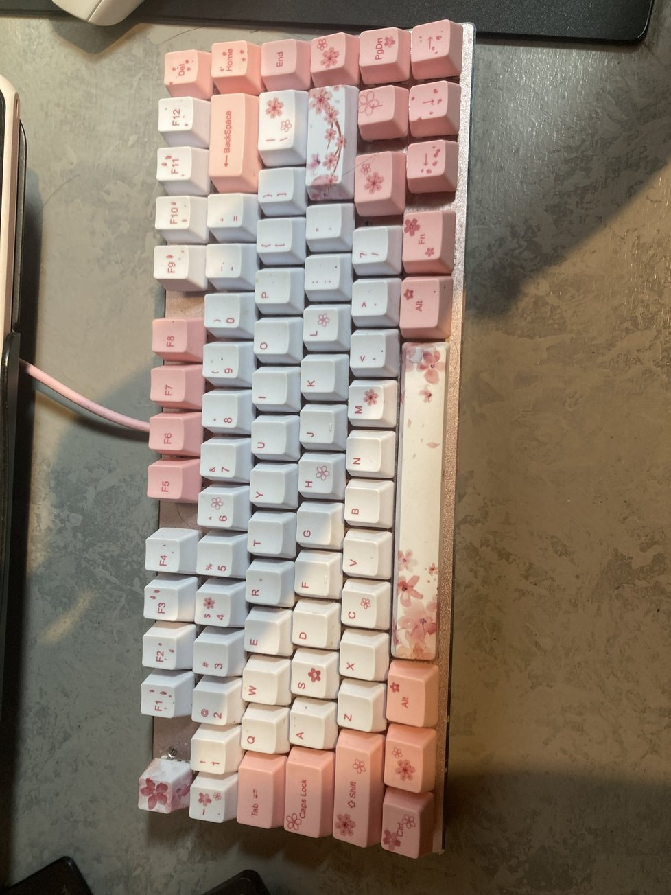

メインPC 自作

CPU : Ryzen5 5600X
GPU : Geforce RTX2070
MEM : DDR4 3600 32GB
M / B : B450 Steel Legend
POW : 750W
オーディオ周り
I/F : Steinberg UR12
アンプ : Pioneer VSA-55
スピーカー : BOSE Acoustimass 5 Series II speaker system
ヘッドホン : オーディオテクニカ ATH₋M20x
ヘッドホン : SHURE SRH840
マイク : マランツ MPM-1000
レコードプレイヤー : ION Max LP
Pioneer VSA-55

BOSE Acoustimass® 5 Series II speaker system

Pulsar Xlite & Pulsar Superglide Glass Mousepad L

e元素 赤軸 ＋ キーキャップ変更
